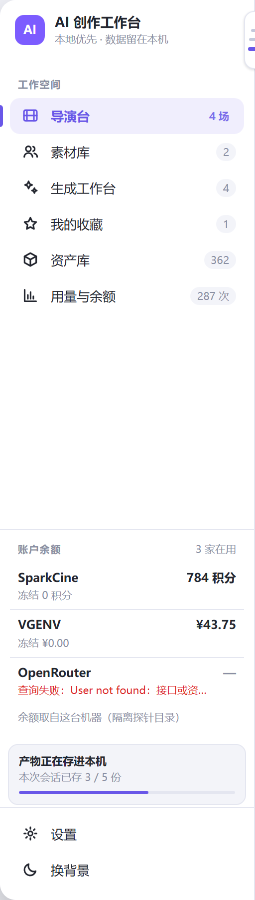

导演台
2 个项目
4 场
设计稿 · 产品代码一行没动
左栏导航重设计：三档宽度
现在只有 66px 收起 / 200px 展开 两档，开关藏在左上角那个 AI 方块里， 收起后只剩六个认不出的图标。这一稿把它改成 轨 / 列 / 架 三档， 开关挪到侧栏右边缘一枚看得见的 刻度拉片 上，轨态悬停出 预告卡。 点右上角三颗按钮或拉片上的任一档都能切。
内容区占位 —— 真机是这一块
改造前 → 改造后
左边两张是真机截图（隔离探针代理，浅色档）：收起态 66px、展开态 200px。 收起态那六个图标，光看形状分不出谁是谁 —— 产品自己的代码注释写着「功能还在，但认不出来」。 右边两张是这一稿。


